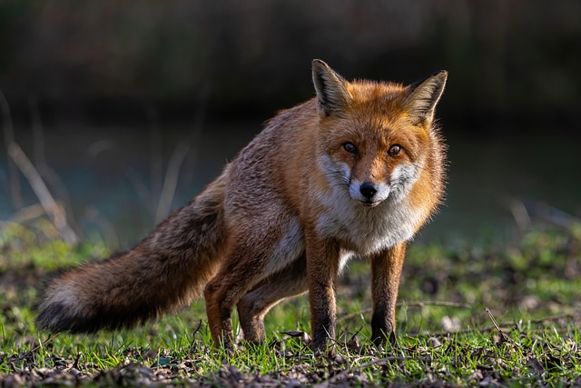
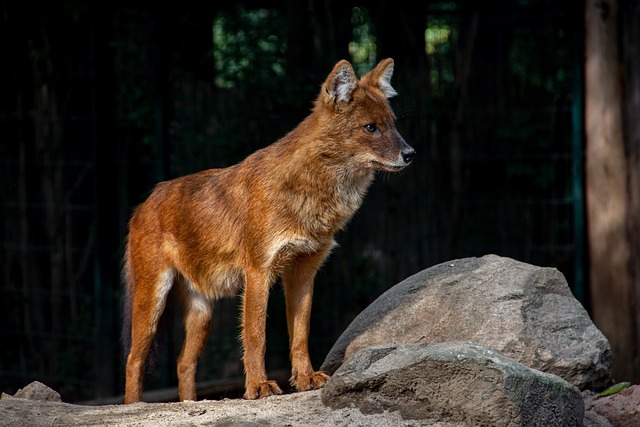
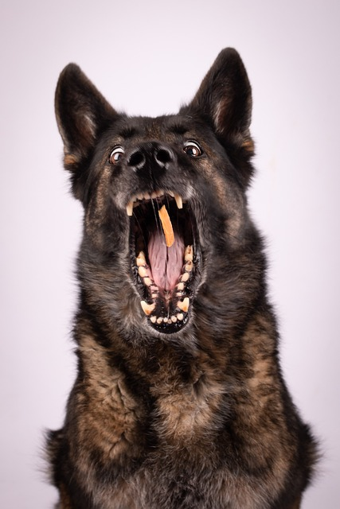
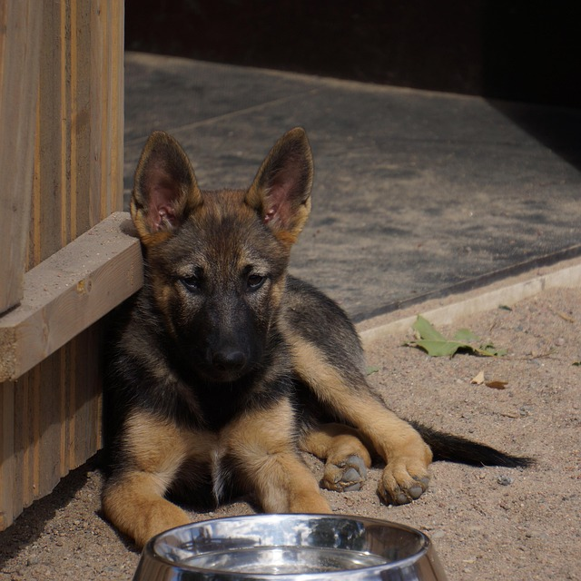
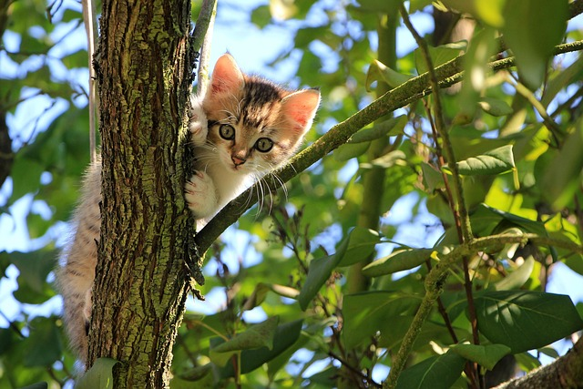
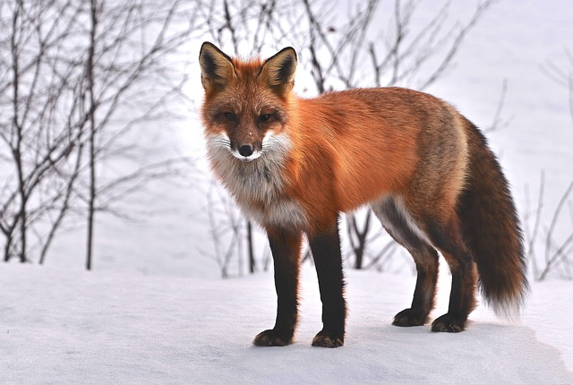
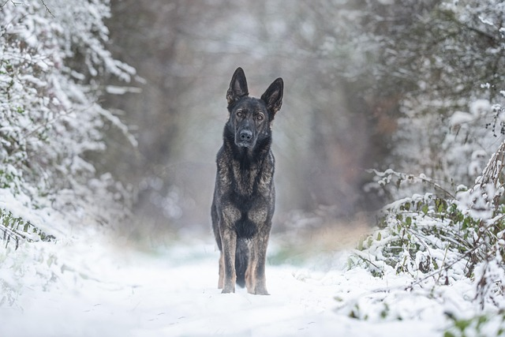
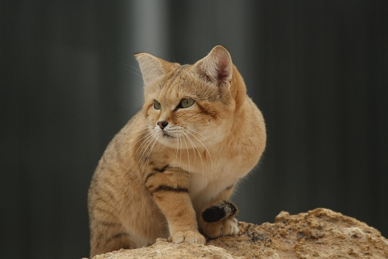

NAŠE MINI GALERIE:

MAXIM - 2 měsíce

CASSIO - 5 let

POLÁRKA - 2 roky

RIA - 4 roky

LUCIFER - 4 měsíce

Výběr každého jedince do našeho chovu podléhá přísným kritériím. Nejde nám jen o špičkový exteriér a splnění standardů plemene, ale především o zdraví, vyrovnanou povahu a silné pracovní či adaptační předpoklady.
Standard péče:Naše zvířata jsou plnohodnotnými členy rodiny. Mají k dispozici prostorné venkovní výběhy i zázemí s individuální péčí, kvalitní superprémiové krmivo a 24/7 dohled. Socializaci věnujeme maximální pozornost od prvních dnů jejich života.
Zdraví a testy:Nic nenecháváme náhodě. Všichni naši chovní jedinci procházejí pravidelnými veterinárními kontrolami, specializovanými genetickými testy, rentgeny kloubů a vyšetřeními zraku či sluchu podle požadavků daného plemene. Do chovu zařazujeme pouze jedince s prokazatelně čistým zdravotním profilem.

Datum narození: 14. 3. 2022
Krátká povaha: Zvědavá, mimořádně inteligentní a ostražitá samice s klidnou povahou vůči ošetřovatelům. Je velice vnímavá k okolnímu prostředí a vyniká čistotou projevů.
Zdravotní testy:
Kompletní genetický screening (včetně testu na specifické infekce a parazity): Negativní / Čisté (12. 1. 2025)
Veterinární prohlídka chovné kondice a zubů: Bez vady (5. 11. 2025)
Klíčové úspěchy:Úspěšná aklimatizace v lidské péči, zakladatelka naší chovné linie, skvělá adaptabilita na výukové programy.
Rodičovské spojení:F1 generace z certifikovaného záchranného chovu (matka: ZARA, otec: ARGO).

Datum narození: 2. 9. 2021
Krátká povaha: Vyrovnaný, loajální a sebevědomý pes s obrovskou ochotou pracovat. Je velmi přátelský k lidem, avšak s přirozeným hlídacím instinktem a pevnou nervovou soustavou.
Zdravotní testy:
RTG DKK (dysplazie kyčelních kloubů): 0/0 (A/A – zcela čistý) (15. 4. 2023)
RTG DLK (dysplazie loketních kloubů): 0/0 (čisté) (15. 4. 2023)
Vyšetření DLM / DM (Degenerativní myelopatie): N/N (negativní / bez genové mutace) (20. 5. 2023)
Klíčové úspěchy: Složené zkoušky všestranné poslušnosti (ZVV1, BH-VT), výborná ohodnocení na klubových výstavách (Výborný, CAC).
Rodičovské spojení: Cesar z Pohraniční stráže x Aura vom Haus.

Datum narození: 10. 5. 2020
Krátká povaha: Klidná, nesmírně mazlivá a trpělivá kočičí dáma. Vyniká jako naprosto skvělá, starostlivá matka, která svá koťata učí perfektním hygienickým i sociálním návykům.
Zdravotní testy:
Test na FIV (kočičí AIDS) a FeLV (kočičí leukémie): Negativní (10. 10. 2025)
HCM / PKD (ultrazvukové vyšetření srdce a ledvin – dědičné vady): Negativní, bez nálezu (12. 8. 2024)
Klíčové úspěchy: Vynikající odchovy s vyrovnanou povahou, vítězka speciální přehlídky domácích mazlíčků v kategorii dospělých jedinců.
Rodičovské spojení: Pochází z naší vlastní stabilní chovné linie (matka: BONNIE, otec: FELIX).




